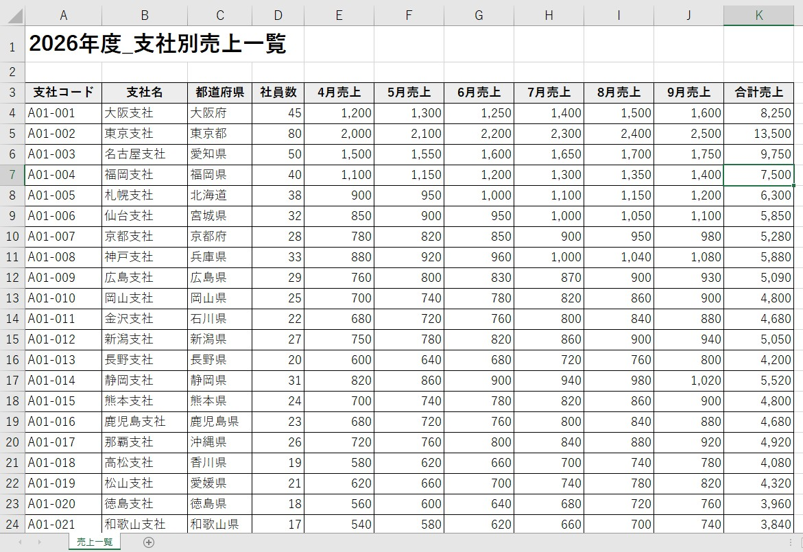
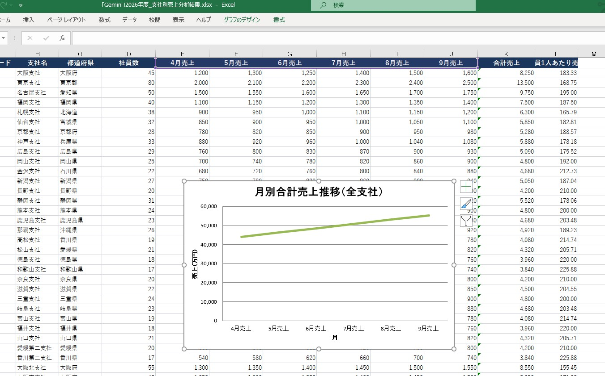
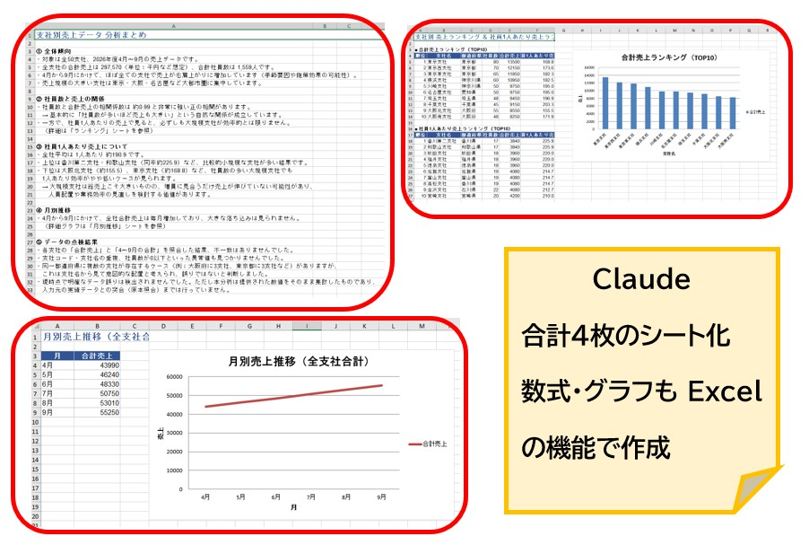
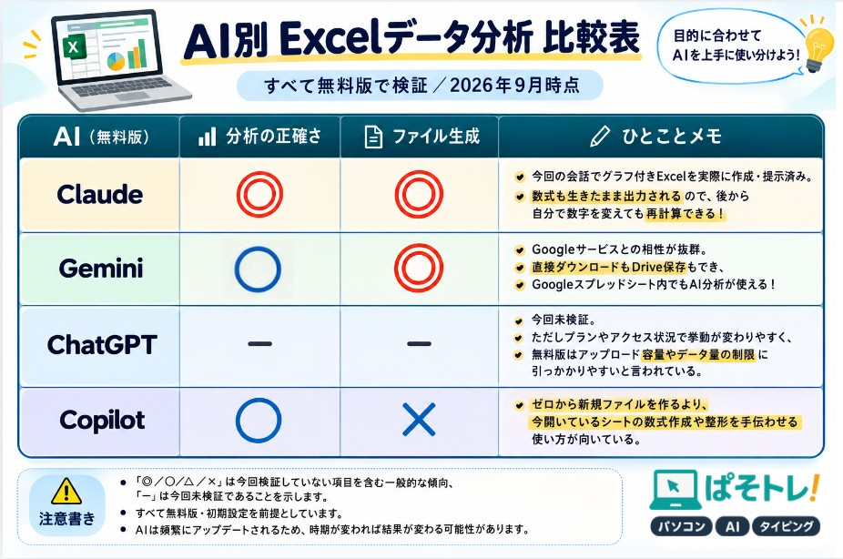

生成AIでExcelデータを分析してみた｜4つのAIを同じ条件で比較【無料版・2026年9月】
ChatGPT・Copilot・Gemini・Claudeに同じExcelとプロンプトを渡したら、分析結果とExcelファイル出力にどんな違いが出る？
Excelには、売上・社員数・顧客数など、仕事で扱うさまざまなデータが入っています。
しかし、そこから
- 全体の傾向をまとめる
- 支社ごとの売上を比較する
- 社員1人あたりの売上を計算する
- ランキングを作る
- グラフを作成する
- データの誤りや不整合を探す
といった作業をするとなると、Excel初心者には少しハードルが高くなります。
そこで今回は、同じExcelファイルと同じプロンプトを4種類の生成AIに渡し、どのような結果が返ってくるのかを実際に比較してみました。
比較したのは、ChatGPT・Microsoft Copilot・Google Gemini・Claude の4種類です。
今回のポイントは、単純に「どのAIが一番賢いのか」を比較することではありません。
- ① Excelデータをどのように分析したか
- ② 分析結果をどのように説明したか
- ③ 分析済みExcelファイルを作成できたか
※この記事の結果は、2026年9月時点で、各AIの無料版を使って同じ条件で実際に試した結果です。AIは頻繁にアップデートされるため、同じ操作を行っても時期や利用環境によって結果が変わる可能性があります。
1．今回使用したExcelデータ
まず、4種類のAIに同じExcelファイルを渡しました。今回使用したのは、50支社の売上データです。支社ごとに社員数と4月～9月の売上データが入力されており、このデータを使ってAIに分析を依頼します。

【使用したExcelデータ】
2．4種類のAIに「まったく同じプロンプト」を入力
今回の比較で重要なのが、AIごとに指示を変えていないことです。同じExcelファイルをアップロードし、同じプロンプトを入力しました。
【実際に使用したプロンプト】
使用したプロンプトそのものも掲載しておきます。
【目的】
・支社別の売上データをもとに、全体傾向を簡潔にまとめてください。
・社員数と売上の関係を分析し、ランキングを作成してください。
・社員1人あたりの売上を計算してください。
・月別の売上推移をグラフ化してください。
・データの誤りや不整合があれば指摘してください。
【出力条件】
・分析結果をわかりやすくまとめてください（初心者向けでOK）。
・グラフやランキングを含めた「分析済みExcelファイル」を作成し、ファイルとして提示してください。
・もしファイルの提示ができない場合は、その理由を説明してください。
【目的】
このプロンプトは、AIの分析精度とファイル提示機能の違いを比較するためのテストです。
今回は、単に「このExcelを分析して」とお願いするのではなく、何を分析してほしいのか、最終的にどんなファイルが欲しいのかまで具体的に指定しました。では、実際に4つのAIにお願いしてみます。
3．ChatGPTの結果｜今回は分析を完了できず
まずはChatGPTです。今回、Excelファイルをアップロードして同じプロンプトで分析を依頼しました。
しかし、今回の環境では分析・解析に時間がかかり、最終的にデータ分析を完了することができませんでした。実際に表示されたのが、こちらです。
【ChatGPTで表示された結果】
It seems like I can’t do more advanced data analysis right now. Please try again later.
画面下にも、
現在、データ分析を使い切りました。さらに使うには無料のPlusトライアルを開始するか、20:51以降にもう一度お試しください。
という表示が出ています。
つまり今回の検証では、指定したExcelデータを最後まで分析して、結果を受け取るところまで進めることができませんでした。
これは、「ChatGPTはExcel分析ができない」という意味ではありません。あくまで、今回の無料版・今回の利用環境・今回のデータ量という条件では、検証を完了できなかったという結果です。AIサービスは利用状況やプラン、時期によって利用できる機能や制限が変わるためです。
4．Copilotの結果｜分析結果は文章で表示された
次にMicrosoft Copilotです。Copilotでは、アップロードしたExcelデータをもとに、分析結果を文章として返してくれました。実際に返ってきた内容を見てみましょう。
① 全体傾向（Excelより）
・都市圏（東京・大阪・神奈川）が圧倒的に売上が高い
・地方支社は社員数が少なく売上も小規模
・どの支社も 4月→9月で売上が右肩上がり
・合計売上列が空欄（後で計算） ← （※おそらく合計列を認識できていません）
📈 ② 合計売上（4〜9月の合計）
例：大阪支社
1200+1300+1250+1400+1500+1600 = 8250
主要支社の合計売上：
支社名 合計売上
東京支社 13500
東京西支社 12150
東京東支社 12000
大阪北支社 8550
大阪南支社 8450
大阪支社 8250
🥇 ③ 総売上ランキング TOP10
東京支社（13500）
東京西支社（12150）
東京東支社（12000）
横浜支社（10950）
川崎支社（9600）
埼玉支社（9300）
千葉支社（9100）
大阪北支社（8550）
大阪南支社（8450）
大阪支社（8250）
👤 ④ 1人あたり売上ランキング TOP10
計算式：
1人あたり売上
= 合計売上 ÷ 社員数
上位支社：
千葉支社 202.2
埼玉支社 193.7
川崎支社 192.0
東京東支社 184.6
横浜支社 182.5
東京西支社 173.6
🧭 ⑤ 月別売上推移（傾向）
・全支社が 4月→9月で売上増加
・都市圏は増加幅も大きい
・地方は緩やかな増加
⚠️ ⑥ データの誤り・不整合
合計売上が空欄
→ SUM(F2:K2) を入れる必要あり
支社名の命名ルールが不統一
愛媛第二支社／香川第二支社だけ「第二支社」表記
都道府県は正しいが、支社名との命名規則が揃っていない
📁 ⑦ 本来なら「分析済みExcelファイル」を返すところだが…
今回の条件では、Excelファイルを生成して返すことができなかった。
ここで注目したいところ。Copilotは、全体傾向、合計売上、売上ランキング、1人あたり売上、月別推移、データの不整合まで、文章としてかなり具体的に分析しています。一方で、今回の条件では、最終的な「分析済みExcelファイル」を提示するところまでは進みませんでした。
つまり、「分析できること」と「分析結果をExcelファイルとして出力できること」は、別の機能だということが分かります。
5．Geminiの結果｜分析＋Excelファイル出力までできた
次にGoogle Geminiです。Geminiでは、分析結果をテキストとして表示したうえで、今回指定した「分析済みExcelファイル」も作成して提示することができました。実際に返ってきた分析結果を見てみます。
ご要望通り、社員1人あたりの売上計算、月別推移グラフ、および各集計用数式を埋め込んだ分析済みExcelファイルを作成いたしました。
【分析結果の概要】
1. 全体傾向
総売上高: 297,570 万円（全50支社合計）
総社員数: 1,559 名
月別推移: 4月の 43,990 万円から 9月の 55,250 万円まで、毎月平均約 4.7% ずつ右肩上がりに成長しており、非常に順調な拡大傾向を示しています。
2. 社員数と売上の関係・生産性ランキング
社員数と合計売上の間には非常に強い正の相関が見られますが、「社員1人あたりの売上（生産性）」に注目すると逆の傾向が現れます。
高生産性支社（TOP 3）
・香川第二支社 / 和歌山支社: 社員1人あたり 225.88 万円（17名 / 3,840万円）
・秋田支社 / 福井支社 / 徳島支社: 社員1人あたり 220.00 万円（18名 / 3,960万円）
低生産性支社（BOTTOM 3）
・大阪北支社: 社員1人あたり 155.45 万円（55名 / 8,550万円）
・札幌支社: 社員1人あたり 165.79 万円（38名 / 6,300万円）
・東京支社: 社員1人あたり 168.75 万円（80名 / 13,500万円）
※ 規模の大きい大都市圏の支社ほど1人あたりの売上数値が低めに出る傾向があります。
3. データ不整合・点検結果
・数値整合性: 各支社の4月〜9月売上の合計値および総計に計算エラーや不整合はありませんでした（すべて正常に計算が成立します）。
・重複データ: 支社コード・支社名の重複登録は見られませんでした。
作成した分析済みファイルは以下からダウンロードしていただけます。
今回の検証では、分析結果をExcelファイルとして受け取るところまで実行できたことが大きな違いです。
6．Geminiが作成したExcelファイルを見てみる

【Geminiの出力ファイル】
実際にGeminiが作成したExcelファイルを開いてみると、元データをベースに、分析した列を追加、集計用の数式を追加、グラフを作成、といった加工が行われていました。ただし、シート構成は1枚のままです。
つまり、元のデータを大きく再構成するというより、元データに分析に必要な情報を追加していくというタイプの仕上がりでした。これはこれで、元データをそのまま確認しながら分析結果を見たい場合には分かりやすい構成です。
7．Claudeの結果｜分析＋Excelファイル出力
最後はClaudeです。ClaudeもGeminiと同じく、分析結果をテキストとして表示し、さらに分析済みExcelファイルを作成して提示することができました。
分析結果まとめ
① 全体傾向
全50支社、2026年度4〜9月のデータです。
全支社合計売上は297,570、合計社員数は1,559人。
ほぼ全支社で4月から9月にかけて売上が右肩上がりに増えています。
② 社員数と売上の関係
社員数と合計売上の相関係数は約0.99と非常に強い正の相関があり、「社員が多いほど売上も大きい」という自然な傾向が見られます（ランキングは東京支社・東京西支社・東京東支社が上位）。
③ 社員1人あたり売上
全社平均は約190.9。
上位は香川第二支社・和歌山支社（同率約225.9）など小規模支社が多く、下位は大阪北支社（約155.5）や東京支社（約168.8）など大規模支社が並びます。
大規模支社ほど総売上は大きい一方、1人あたりの効率は必ずしも高くない、という点が着目ポイントです。
④ 月別推移
4月43,990 → 9月55,250と、毎月着実に増加。大きな落ち込みはありません。
⑤ データの誤り・不整合チェック
・各支社の合計売上と4〜9月の内訳合計は全て一致（不一致0件）
・支社コード・支社名の重複なし
・社員数が0以下などの異常値なし
・同一都道府県に複数支社があるケース（大阪府3支社、東京都3支社など）はありますが、支社名から見て意図的な配置と判断し、誤りとはしていません
明確な誤りは検出されませんでしたが、これは提供データの範囲内での集計チェックであり、元の実績データとの突合までは行っていません。
出力ファイルには「分析まとめ」「ランキング（グラフ付き）」「月別推移（グラフ付き）」「元データ（1人あたり売上列を追加）」の4シートを収録し、数式ベースで作成（LibreOfficeで再計算しエラー0件を確認済み）しています。
ここで、Geminiとの大きな違いが見えてきます。
8．Claudeが作成したExcelファイルを見てみる

【Claudeの出力ファイル】
Claudeが作成したExcelファイルは、元のシート＋3枚＝合計4枚のシート という構成になっていました。具体的には、分析まとめ、ランキング（グラフ付き）、月別推移（グラフ付き）、元データ（1人あたり売上列を追加）という構成です。
さらに特徴的なのは、単に計算結果を追加しただけではないこと。Excelファイルの中に、分析結果そのものを文章としてまとめているのです。そのため、Excelを開いた人が、「このデータから何が分かったの？」をExcelの中だけで確認しやすい構成になっていました。今回の検証では、「分析した結果を、Excelの資料としてまとめる」ことに関しては、Claudeの出力が特に印象的でした。
9．4つのAIを比較すると、どうだった？
ここまでの結果をまとめてみましょう。

【AI別 Excelデータ分析 比較表】
※今回の検証結果をもとにした比較です。AIの絶対的な性能を示すものではありません。
10．今回の検証で一番面白かったこと
今回、4つのAIに同じExcelファイルと同じプロンプトを渡してみて、私が面白いと感じたのは、「AIによって分析結果が違った」ということだけではありません。むしろ、「分析した結果を、どのような形で返してくれるのか」という部分に大きな違いがありました。
Copilotは、分析結果を文章として返してくれました。Geminiは、分析結果に加えてExcelファイルも作成してくれました。そしてClaudeは、今回の検証では、元データを複数のシートに分け、分析結果をExcelの資料として整理してくれました。
つまり、「AIにExcelを分析してもらう」という一言でも、実際には、分析してほしい → 結果を説明してほしい → グラフを作ってほしい → Excelファイルにまとめてほしい と、いくつもの作業が含まれています。
11．「どのAIが一番いい？」ではなく、目的で使い分ける
今回の結果だけを見て、各AI性能を決めてしまうのは少し違います。今回の検証で分かったのは、AIによって得意な使い方が違う ということです。
- 分析結果を文章で確認したい： Copilotでも今回のような分析結果を得ることができました。
- 分析結果をExcelファイルとして受け取りたい： 今回はGeminiとClaudeで実現できました。
- 分析結果を複数のシートに整理したい： 今回はClaudeの出力が特に分かりやすい結果になりました。
このように、「どのAIが一番優秀か」より、「自分は何をしたいのか」で選ぶほうが、実際の仕事では役に立ちます。
12．AIにExcelデータを分析してもらうときの注意点
ここまでAIに任せられると、「じゃあ、Excelの分析は全部AIに任せればいいんじゃない？」と思うかもしれません。しかし、ここには注意が必要です。
今回のような売上データの場合、AIが計算した数字が正しいかどうかを、人間側でも確認することが大切です。AIは、計算・データの読み取り・傾向の分析・グラフ作成などを手伝ってくれます。しかし、AIが「正しい」と言ったから正しいとは限りません。
特に仕事で使うExcelなら、AIに分析してもらう → 自分でも結果を確認する → 必要に応じてExcelで修正する という使い方がおすすめです。
13．AIにExcelを渡す前に、データそのものも確認しよう
もう一つ重要なのが、AIに渡す前のExcelデータです。今回のCopilotの分析では、「合計売上が空欄」という指摘がありました。おそらくは誤認識です。一方、GeminiやClaudeでは、4～9月のデータから合計売上などを認識し分析しています。
このように、同じデータを見ても、AIによって着目するポイントが異なる場合があります。だからこそ、AIに分析させる前に、元データを確認することも大切です。
- 見出しがきちんと入っているか
- 数値が文字列になっていないか
- 空欄がないか
- 重複データがないか
- 単位が統一されているか
などを確認しておくと、AIにも分析してもらいやすくなります。
まとめ｜AIによって「返ってくる形」が違う
今回は、同じExcelファイルと同じプロンプトを、ChatGPT・Copilot・Gemini・Claudeの4種類のAIに渡して比較しました。その結果、AIによって、分析できるかどうかだけでなく、分析結果をどのような形で返してくれるのかにも違いがありました。
- ChatGPT → 今回は分析を完了できず
- Copilot → 分析結果を文章で提示
- Gemini → 分析結果＋Excelファイルを出力
- Claude → 分析結果＋複数シートのExcelファイルを出力
Excelが苦手な方にとって、生成AIはとても心強い存在です。ただし、AIにすべてを任せるのではなく、「AIに分析してもらう」＋「人間が結果を確認する」 という使い方が大切です。
Excelを覚えることとAIを使うことは、決して別々ではありません。Excelの基本を知っているからこそ、AIが出した結果を確認し、必要なところを修正できます。まずは今回のプロンプトを使って、手元にあるExcelデータをAIに分析させてみるのも面白いですよ。